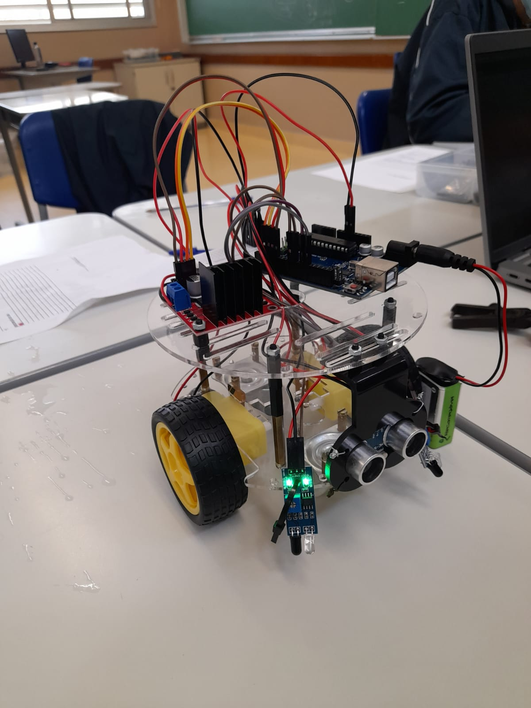

Oque é o nosso Projeto?
Nosso projeto tem como objetivo principal otimizar o processo de transporte de lixo hospitalar, buscando soluções eficientes para garantir o descarte correto e seguro de resíduos de saúde. A proposta visa não apenas atender às exigências legais e ambientais, mas também oferecer mais praticidade e segurança para os profissionais da saúde, que lidam diariamente com esses materiais de risco. Com um design focado na funcionalidade e na sustentabilidade, nosso sistema facilita o manuseio do lixo hospitalar, minimizando riscos de contaminação e promovendo um ambiente mais seguro para todos. Além disso, buscamos reduzir os custos operacionais e melhorar a logística do descarte, contribuindo para a eficiência do gerenciamento de resíduos dentro das instituições de saúde.
Curiosidades
O carrinho é alimentado por um microcontrolador Arduino e conta com quatro rodas e dois motores — um para cada eixo — que garantem estabilidade e precisão em seus movimentos. Ao receber um alerta do aplicativo, o sistema é automaticamente acionado, direcionando o carrinho até o destino predefinido. Essa integração entre hardware e software permite uma resposta ágil e eficiente, unindo tecnologia e automação de forma inteligente.
Projeto em Desenvolvimento
-
Projeto da Maquete -

Carrinho em Testes -
Carrinho de Arduino